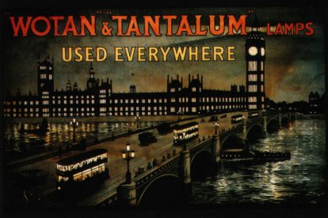

Thursday, January the 29th, 2004
back to: title, date or indexes
In an item about Crestfallen Dan published on 27th January (see below), we stated that he “lit his hut with the aid of a single Tilly lamp”. Dan's solicitor has written to us as follows:
“My client takes great exception to being accused of lighting his hut with a Tilly lamp. This is a vile calumny. You should be aware that Crestfallen Dan is not only crestfallen but litigious. Indeed, it is no exaggeration to say that my practice would have fallen into desuetude long ago were it not for his keen sense of injustice. I have lost count of the number of luncheons we have had in the convivial surroundings of the Cow & Pins tavern, and not a pudding is consumed without my client apprising me of yet further besmirchment of his character. Crestfallen Dan's hut is lit by Wotan and Tantalum lamps. Unless a correction to this effect is published on your site with all due haste, I will have no alternative but to have you set upon by the Men With Whisks & Celery!”
The Hooting Yard Foundation apologises unreservedly for any distress caused by our unfounded Tilly lamp assertion, than which there is no viler calumny, and we are pleased to confirm that Crestfallen Dan uses the lamps advertised below.

{kind=link}